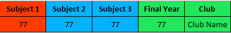

Thanks a bunch for participating in our experiment! It lasts approximately 30 minutes. Here are short instructions to make your experience smooth and without any misunderstandings.
Please, read the instructions carefully, you will be asked a couple of questions about them.
You have finally achieved your dream: you became a part of admissions committee of three Medical undergraduate programs in a country called Gondour. You are going to see 15 applicants of the first university, then 15 applicants of the second one, and lastly, 15 applicants of the third one. You are going to be presented with one candidate's profile at a time. Each university follows the same selection criteria.
All candidates you are going to review graduated from equally prestigious high schools, have indicated the university they had applied to as their first choice, and have equally sufficient financial and linguistic capabilities to follow your program. Thus, you are going to evaluate the applicants based on the 5 selection criteria presented below and
these criteria only:
1)
Final Year - the average of all grades received in the final year of high school;
2)
Chemistry - the final grade for Chemistry class in the final year of high school;
3)
Biology - the final grade for Biology class in the final year of high school;
4)
Physics - the final grade for Physics class in the final year of high school;
5)
Extracurricular Activity - a membership in a students' club. A students' club is an organization, where one can develop one's interpersonal skills and deepen one's knowledge about and passion for a certain domain.
In each trial, you will see a table with the criteria above, grades and club participation of an applicant. Not all criteria share the same level of importance, or in other words, the same weight. Each table's column is colored, and color corresponds to the level of importance:
red - very important,
blue - important, and
green - slightly important. Criteria that are in the columns of the same color have the same level of importance. See an example below:

In this example, Subject 1's grade is very important and Final Year's grade and Club are equally slightly important. Subject 2 and Subject 3's grades share the same importance. Each university establishes their own order of criteria importance, and you will be introduced to it later in the experiment.